Coleta segura
Orientação para acondicionar os resíduos conforme as características da carga.
A DMS Ambiental gerencia resíduos sólidos e líquidos, classes I e II, com transporte, tratamento e destinação licenciados em Brasília e região.
Orientação para acondicionar os resíduos conforme as características da carga.
Planejamento de coleta e logística em conformidade com as condições aplicáveis.
Avaliação do encaminhamento adequado para cada tipo de resíduo e serviço.
Uma rotina de gestão que considera a operação da empresa e o cuidado com o meio ambiente.
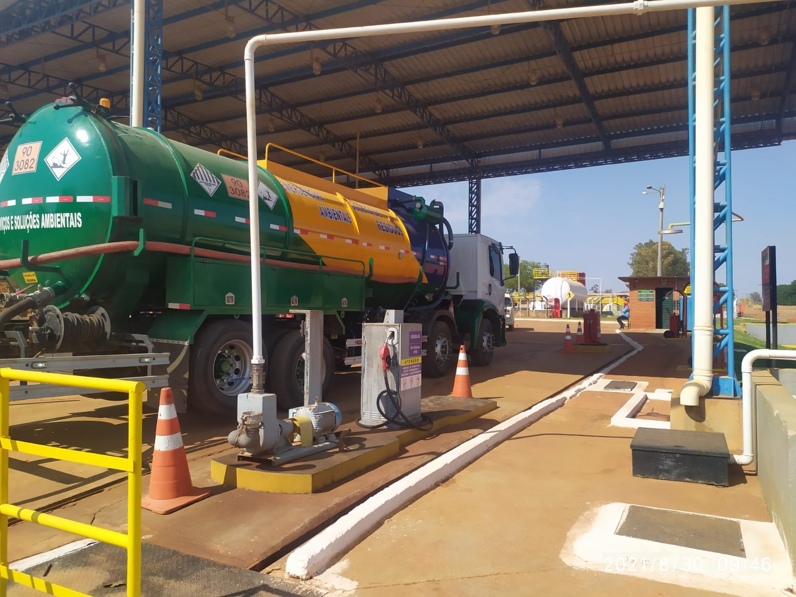
Há 24 anos, a DMS Ambiental apoia empresas na gestão sustentável de resíduos sólidos e líquidos, classe I e II. Aliamos conhecimento, estrutura e atendimento próximo para construir soluções adequadas a cada demanda.
Atuamos como transportador e destinatário final, com licenças e conformidade junto aos órgãos regulamentadores e fiscalizadores do Distrito Federal.
A DMS reúne recursos operacionais, profissionais qualificados e estrutura de tratamento para apoiar o gerenciamento de resíduos sólidos e líquidos, classes I e II.
Combinamos atendimento técnico e serviços integrados para organizar o manejo de resíduos com segurança e responsabilidade.
Planejamento e organização das etapas de manejo, conforme o tipo de resíduo, volume e rotina da empresa.
Saiba maisColeta e transporte licenciados, com orientação sobre acondicionamento, logística e operação.
Saiba maisTratamento de efluentes e destinação final com foco em segurança, rastreabilidade e conformidade.
Saiba maisEquipamentos para acondicionamento e transporte de resíduos, com modalidades de locação conforme a aplicação.
Conheça a locaçãoAtendimento com licenças aplicáveis para transporte e destinação, em conformidade com os órgãos competentes.
Consultar atendimentoAvaliação técnica inicial para entender o material, o volume, a rotina e as condições da sua operação.
Descrever minha necessidadeConte um pouco sobre sua operação e receba uma orientação inicial da equipe.
Cada operação é diferente. Por isso, começamos entendendo o cenário do cliente: o material, o volume, a frequência e o local de atendimento.
Essa conversa ajuda a equipe a indicar os próximos passos e avaliar as condições técnicas e logísticas do serviço.
Veja como trabalhamos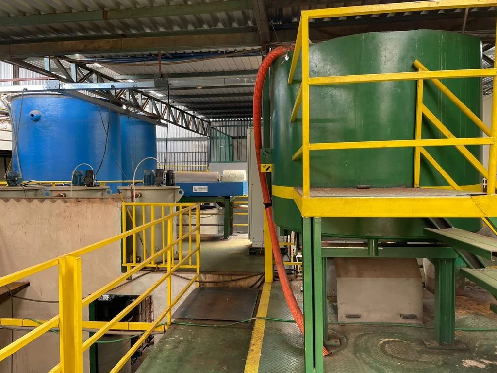
Contribuir com o desenvolvimento sustentável dos clientes e da sociedade, reduzindo impactos ambientais.
Ser referência em gestão ambiental, com excelência, inovação e responsabilidade em todo o território brasileiro.
Sustentabilidade, ética, criatividade, qualidade e compromisso com o meio ambiente.
A avaliação inicial ajuda a entender o contexto e orientar uma proposta compatível com a demanda.
Tipo de resíduo, origem, quantidade e frequência do serviço.
Condições técnicas, operacionais e de atendimento na região.
Escopo, responsabilidades, logística e documentação pertinente.
Atendimento conforme as condições acordadas e aplicáveis.
Conheça um pouco da estrutura e das equipes que apoiam os serviços ambientais da DMS.
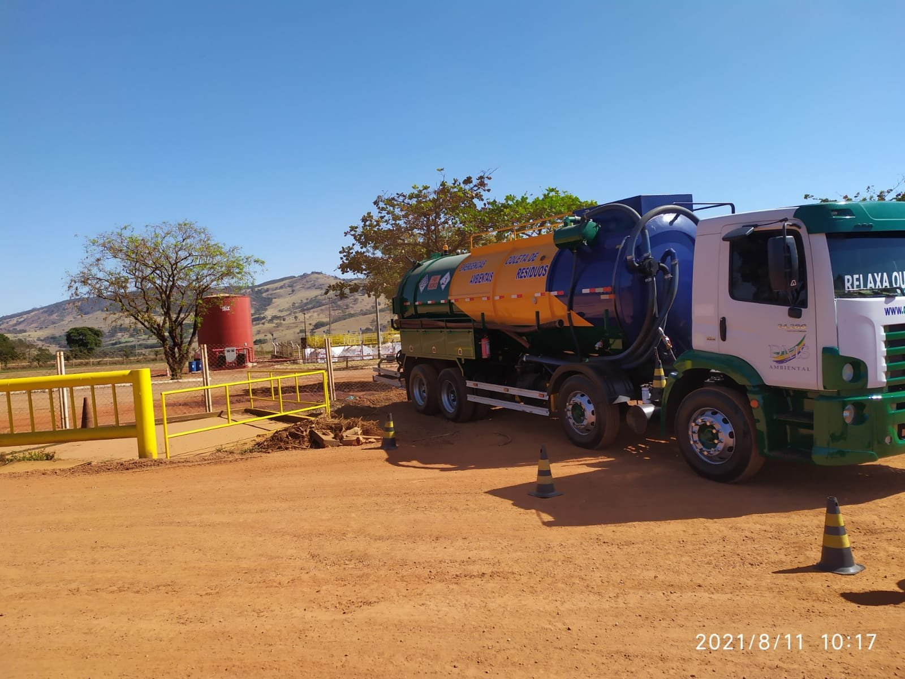

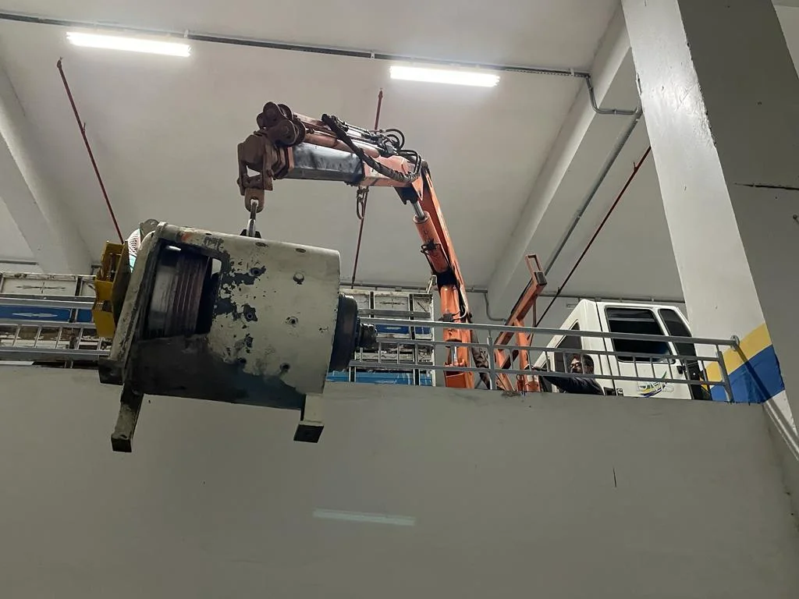
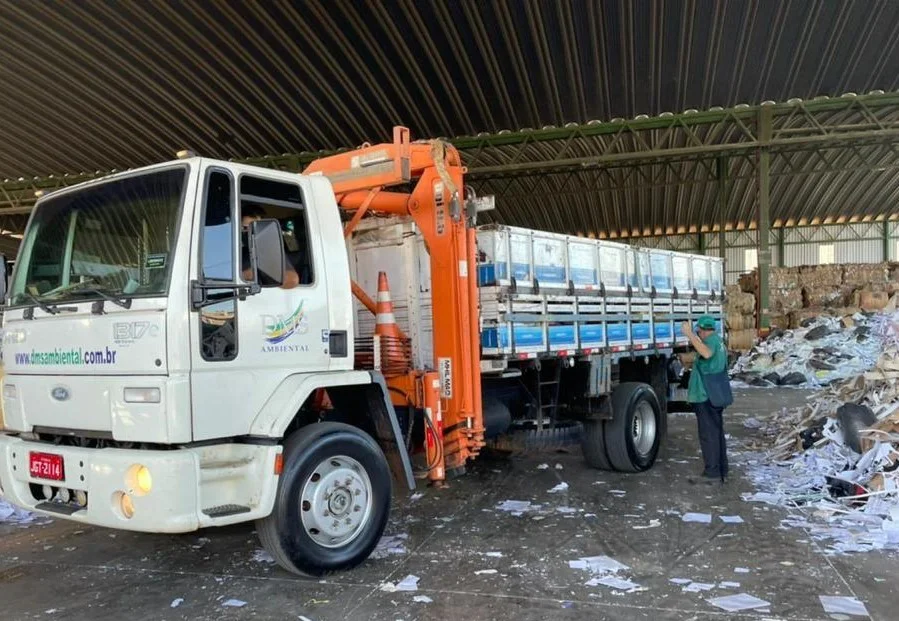
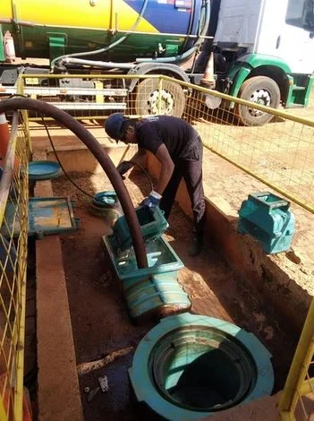
Uma seleção de clientes e parceiros que confiam na experiência ambiental da DMS.
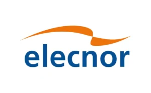
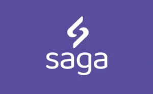
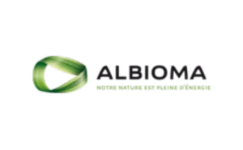
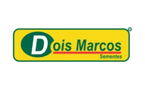
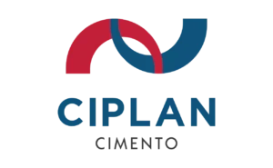
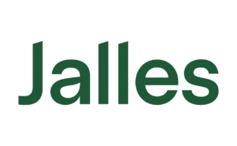
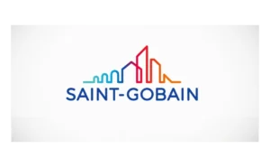
Guias objetivos para empresas que buscam entender a gestão de resíduos, o transporte e as soluções ambientais em Brasília e região.
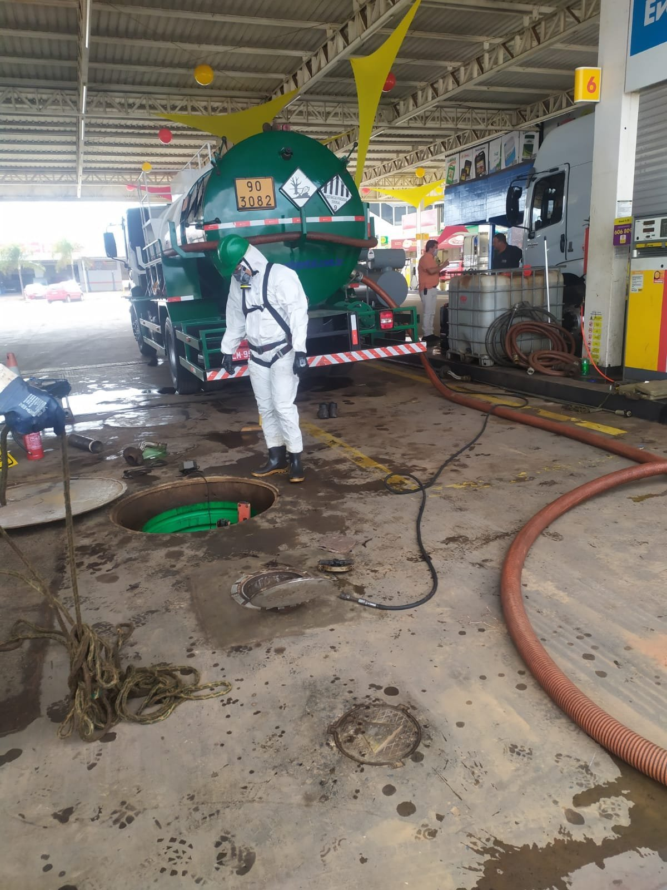
Classificação de resíduosA classificação orienta o acondicionamento, o transporte e a destinação adequados.
Um fluxo organizado conecta a geração do resíduo ao destino final.
Compatibilidade entre carga, veículo, rota e destino é parte essencial do planejamento.
Efluentes líquidosA solução depende da origem, da composição e das condições de recebimento.
A locação pode apoiar operações temporárias ou rotinas com necessidade de acondicionamento.
Visibilidade sobre materiais, volumes e frequência facilita decisões operacionais melhores.
Nossa unidade está no Setor de Materiais de Construção, com acesso para atendimento e operação na região do Distrito Federal.
Envie as informações principais da sua demanda. Nossa equipe recebe o contexto e segue com você pelo canal de atendimento.
Com algumas informações, nossa equipe pode direcionar melhor a conversa.